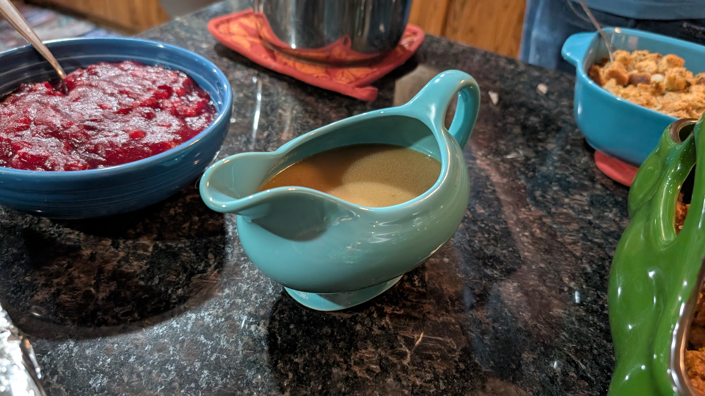

Vegetarian Gravy
Prep Time: 5 mins
Cook Time: 10 mins
If you don't have enough time to make a gravy with the delicious turkey drippings and/or you have vegetarians in your gathering, this is an excellent substitute!
Tools
- Gravy Boat for serving
- Optional - immersion blender
Ingredients
- Seasonings & Flavor Additions
- 1 tsp Italian seasoning - mainly oregano rosemary and thyme
- Salt and Pepper to taste
- 1/2 Tbsp Dijon Mustard
- 1 tsp red wine vinegar
- 2-3 cloves of garlic grated
- Optional - 1/8 tsp white pepper
- Optional - 1/4 tsp MSG
- Other
- 2 Tbsp and a little extra of unsalted butter
- 3 Tbsp all purpose flour
- 2 cups of vegetable stock
Instructions
- Roux: Melt the butter in a pan over medium-low heat.
Add in the grated garlic and cook until the raw flavor and smell is gone.
Add the flour and quickly stir until fully bubbling, and the rawness of the
flour is gone.
- Next, add the dijon mustard and the red wine vinegar and stir until the
mustard gets fully incorporated.
- Add the stock to the mixture, and continuously stir until smooth. You can
use an immersion blender to really smooth it out.
- Add salt and pepper to taste, and the optional white pepper & MSG. Mix or
blend well, and serve!
Enjoy the gravy with the rest of your feast!